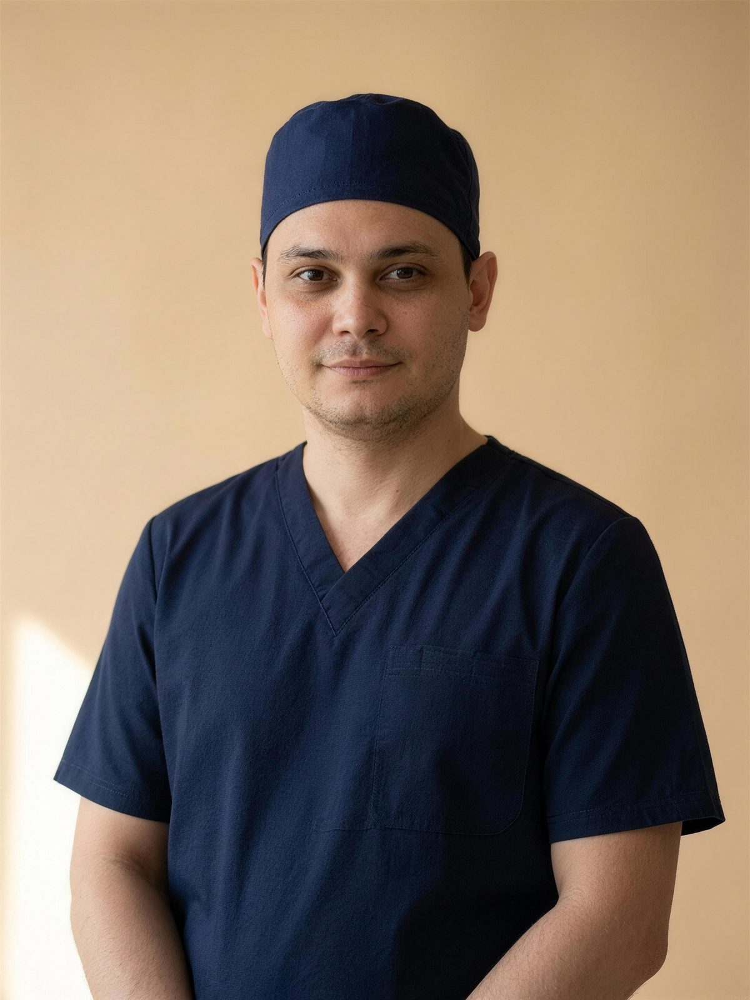
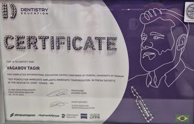
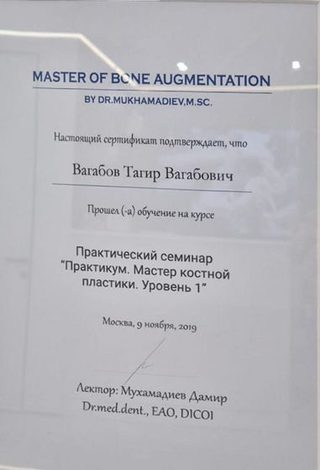
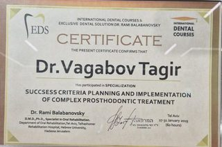
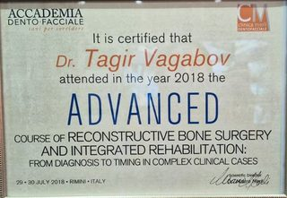
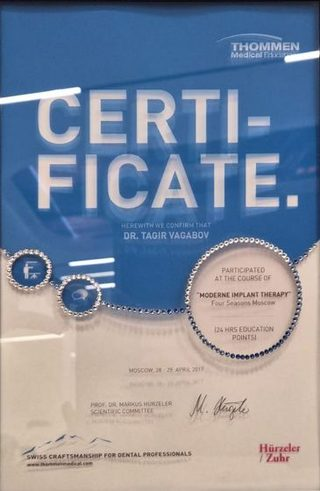
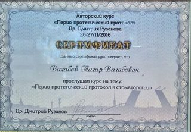
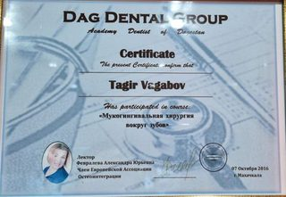
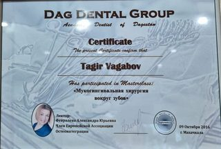

Вагабов Тагир Вагабович
Главный врач · хирург-имплантолог
стаж 17 лет
Immediate implants in the aesthetic zone, hands-onDentistry Education · проф. Рикардо Керн · Москва, январь 2022
Мастер костной пластики. Уровень 1Master of Bone Augmentation · Дамир Мухамадиев · Москва, ноябрь 2019
Planning of complex prosthodontic treatmentInternational Dental Courses · Рами Балабановский · Тель-Авив, январь 2019 · 60 часов
Advanced course of reconstructive bone surgeryAccademia Dento-Facciale · Clinica Merli · Римини, июль 2018
Moderne Implant TherapyThommen Medical Education · проф. Маркус Хюрцелер · Москва, апрель 2017
Перио-протетический протокол в стоматологииАвторский курс Дмитрия Рузанова · ноябрь 2016
Мукогингивальная хирургия вокруг зубов: курсDag Dental Group · Александра Февралева · Махачкала, октябрь 2016
Мукогингивальная хирургия вокруг зубов: мастер-классDag Dental Group · Александра Февралева · Махачкала, октябрь 2016